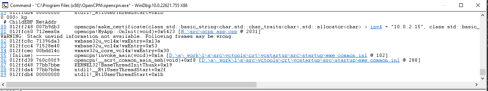

Creating a stack trace
| Fow Windows and MacOS these docs are not useful until after the 5.8 release and related download urls for pdb and dSYM files. OTOH, the descriptions for Debian/Ubuntu and Flatpak are usable at the time of writing. |
Occasionally, if OpenCPN crashes a stack trace carries valuable information about the crash which often is needed to find out the reason. The procedure to create a stack trace is depends on platform, but the general steps are
-
Install necessary tools
-
Download or install debug symbols.
-
Start opencpn controlled by a debugger and make it crash
-
Display the stack trace in the debugger and submit it in a bug report
Windows
Install windbg
The tool to use is windbg. It is part of a large set of debugging tools, but can be installed separately as described in https://learn.microsoft.com/en-us/windows-hardware/drivers/debugger/debugger-download-tools
Download pdb file
Debugging symbols in Windows are contained in a pdb file. Pdb files for OpenCPN can be downloaded from the latest github release artifacts directory, currently https://github.com/OpenCPN/OpenCPN/releases/tag/Release_5.8.4. This file should be downloaded and installed in the same directory as OpenCPN, by default C:\Program Files (x86)\OpenCPN\.
Start OpenCPN and make it crash
After installing windbg, start it after typing windbg in the bottom-left Windows search bar. Use the 32-bit x86 variant for user-space code if there are alternatives.
In windbg, use File | Open Executable to open the opencpn program. In a default installation, it can be found in C:\Program Files (x86)\OpenCPN\opencpn.exe. Opencpn starts executing, but stops at an very early stage. This is normal.
The pane at the bottom of windbg is a command window. Here, give the command g followed by a return. OpenCPN then resumes execution. Make the actions which triggers a crash.
Display stack trace and submit it.
After the crash put focus on windbg again. In the command window, give the command kp followed by a return. The stack trace is printed in the main window, like this: :
A more detailed look (some long lines wrapped):
0:000> kp
00 012ff248 007b9db3 opencpn!make_certificate(
class std::basic_string<char,std::char_traits<char>,std::allocator<char> >
ipv4 = "10.0.2.15",
class std::basic_string<char,std::char_traits<char>,std::allocator<char> >
destination_dir = "C:\ProgramData\opencpn\")+0x153
[N:\src\certificates.cpp @ 237]
01 012ffc60 712eea0a opencpn!MyApp::OnInit(void)+0x5423 [N:\src\ocpn_app.cpp @ 2031]
WARNING: Stack unwind information not available. Following frames may be wrong.
02 012ffc8c 71396da3 wxbase32u_vc14x!wxEntry+0x13a
03 012ffcc4 71528e40 wxbase32u_vc14x!wxEntry+0x53
04 012ffcec 00bdd14c wxmsw32u_core_vc14x!wxEntry+0x30
05 (Inline) -------- opencpn!invoke_main(void)+0x1a [D:\a\_work\1\s\src\vctools\crt\vcstartup\src\startup\exe_common.inl @ 102]
06 012ffd38 760c00f9 opencpn!__scrt_common_main_seh(void)+0xf8 [D:\a\_work\1\s\src\vctools\crt\vcstartup\src\startup\exe_common.inl @ 288]
07 012ffd48 77bb7bbe KERNEL32!BaseThreadInitThunk+0x19
08 012ffda4 77bb7b8e ntdll!__RtlUserThreadStart+0x2f
09 012ffdb4 00000000 ntdll!_RtlUserThreadStart+0x1b
Copy the first 10-20 lines like above from the stacktrace and submit it in a bug report.
Note for developers:
The paths in the pdb file are rooted in a virtual N: drive, for example
N:\src\catalog_mgr.cpp. If there is a need to map the paths in the pdb
file to the developer’s complete source, this can be done using the MSDOS
subst command. For example, if the developer’s clone lives in
\Users\foo\src\OpenCPN it can be mapped to the paths in the pdb file using
subst N: \Users\foo\src\OpenCPN.
Debian/Ubuntu
-
Either use debuginfod or install a debug package, see below
-
Install gdb using
sudo apt update; sudo apt install gdb. -
Start the debugger
$ gdb /usr/bin/opencpn .... (lot's of output)
-
Start opencpn in the debugger using the command run:
(gdb) run Starting program: /usr/bin/opencpn
-
Make opencpn crash. The debugger prints a lot of text and a new (gdb) prompt
[...] (gdb)
-
Create the stacktrace using the command bt:
(gdb) bt #0 CacheSizer::on_clear_btn_clicked() (this=0x5555597f40e0) at ./src/cat_settings.cpp:213 #1 CacheSizer::CacheSizer(wxWindow*)::{lambda(wxCommandEvent&)#1}::operator()(wxCommandEvent&) const (e=<optimized out>, __closure=<optimized out>) at ./src/cat_settings.cpp:203 #2 wxEventFunctorFunctor<wxEventTypeTag<wxCommandEvent>, CacheSizer::CacheSizer(wxWindow*) ::{lambda(wxCommandEvent&)#1}>::operator()(wxEvtHandler*, wxEvent&) (this=<optimized out>, event=<optimized out>) at /usr/include/wx-3.0/wx/event.h:537 #3 0x00007ffff71a3241 in wxEvtHandler::ProcessEventIfMatchesId( wxEventTableEntryBase const&, wxEvtHandler*, wxEvent&) () at /lib/x86_64-linux-gnu/libwx_baseu-3.0.so.0 #4 0x00007ffff71a35ba in wxEvtHandler::SearchDynamicEventTable(wxEvent&) () at /lib/x86_64-linux-gnu/libwx_baseu-3.0.so.0 #5 0x00007ffff71a3650 in wxEvtHandler::TryHereOnly(wxEvent&) () at /lib/x86_64-linux-gnu/libwx_baseu-3.0.so.0 #6 0x00007ffff71a3703 in wxEvtHandler::ProcessEventLocally(wxEvent&) () at /lib/x86_64-linux-gnu/libwx_baseu-3.0.so.0 #7 0x00007ffff71a37a1 in wxEvtHandler::ProcessEvent(wxEvent&) () at /lib/x86_64-linux-gnu/libwx_baseu-3.0.so.0 #8 0x00007ffff71a3537 in wxEvtHandler::SafelyProcessEvent(wxEvent&) () at /lib/x86_64-linux-gnu/libwx_baseu-3.0.so.0 #9 0x00007ffff755e3d7 in () at /lib/x86_64-linux-gnu/libwx_gtk3u_core-3.0.so.0 #10 0x00007ffff53662ee in () at /lib/x86_64-linux-gnu/libgobject-2.0.so.0
Copy the stacktrace and submit it in a bug report.
Flatpak
-
Install development tools:
flatpak install --user org.freedesktop.Sdk -
Install debug symbols:
flatpak install --user org.opencpn.OpenCPN.Debug -
Start the flatpak sandbox:
$ flatpak run --devel --command=bash org.opencpn.OpenCPN [📦 org.opencpn.OpenCPN]$
-
Start the debugger in the sandbox (note that opencpn lives in /app/bin). Gdb prints a lot of text. In the end the debug symbols are loaded and a (gdb) prompt is written:
[📦 org.opencpn.OpenCPN]$ gdb /app/bin/opencpn [...] Reading symbols from /app/bin/opencpn... Reading symbols from /usr/lib/debug//app/bin/opencpn.debug... (gdb)
-
Start opencpn in the debugger using the command run:
(gdb) run Starting program: /app/bin/opencpn [...]
-
Make opencpn crash. The debugger prints a lot of text and a new prompt:
[....] (gdb)
-
In gdb, create the stacktrace using the command bt. This is copied and submitted in a bug:
(gdb) bt #0 CacheSizer::on_clear_btn_clicked() (this=0x55555bc2e1f0) at /run/build/opencpn/src/cat_settings.cpp:212 #1 CacheSizer::CacheSizer(wxWindow*)::{lambda(wxCommandEvent&)#1} ::operator()(wxCommandEvent&) const (e=<optimized out>, __closure=<optimized out>) at /run/build/opencpn/src/cat_settings.cpp:202 #2 wxEventFunctorFunctor<wxEventTypeTag<wxCommandEvent>, CacheSizer::CacheSizer(wxWindow*) ::{lambda(wxCommandEvent&)#1}>::operator()(wxEvtHandler*, wxEvent&) (this=<optimized out>, event=<optimized out>) at /app/include/wx-3.2/wx/event.h:547 #3 0x00007ffff70425c2 in wxEvtHandler ::ProcessEventIfMatchesId(wxEventTableEntryBase const&, wxEvtHandler*, wxEvent&) (entry=..., handler=<optimized out>, event=...) at ./src/common/event.cpp:1431 #4 0x00007ffff7042a8d in wxEvtHandler ::SearchDynamicEventTable(wxEvent&) (this=this@entry=0x55555b0abc50, event=...) at ./src/common/event.cpp:1901 #5 0x00007ffff7042ded in wxEvtHandler ::TryHereOnly(wxEvent&) (this=this@entry=0x55555b0abc50, event=...) at ./src/common/event.cpp:1624 #6 0x00007ffff7042e9f in wxEvtHandler ::TryBeforeAndHere(wxEvent&) (event=..., this=0x55555b0abc50) at ./include/wx/event.h:4007 #7 wxEvtHandler::ProcessEventLocally(wxEvent&) (this=0x55555b0abc50, event=...) at ./src/common/event.cpp:1561 #8 0x00007ffff7042fa2 in wxEvtHandler::ProcessEvent(wxEvent&) (this=0x55555b0abc50, event=...) at ./src/common/event.cpp:1534 #9 0x00007ffff70447f3 in wxEvtHandler ::SafelyProcessEvent(wxEvent&) (this=<optimized out>, event=...) at ./src/common/event.cpp:1650 #10 0x00007ffff77cd550 in wxWindowBase ::HandleWindowEvent(wxEvent&) const (this=this@entry=0x55555b0abc50, event=...) at ./src/common/wincmn.cpp:1553
MacOS
Install the lldb debugger
If Xcode is installed lldb is already in place. Otherwise, see for example https://stackoverflow.com/questions/34680789
Download and install debug symbols
On MacOS, debug symbols lives in a dSYM bundle. dSYM bundles for released OpenCPN versions can be downloaded from TBD.
Download and uncompress that file and store it in /Applications/OpenCPN/Contents/MacOS, something like:
$ wget https://dl.cloudsmith.io/public/alec-leamas/opencpn/raw/files/OpenCPN-deadbeef.dSYM.tar.gz $ tar xf OpenCPN-deadbeef.dSYM.tar.gz $ sudo mv OpenCPN.dSYM Applications/OpenCPN/Contents/MacOS
Start debugging
Easiest is to start from the installation directory, YMMV:
$ cd /Applications/OpenCPN/Contents/MacOS
$ lldb OpenCPN
(lldb) target symbols add OpenCPN.dSYM
(lldb) run
After starting OpenCPN, make it crash.
Notes:
-
If OpenCPN hasn’t been started before (fresh installation) one needs to first open it using ctrl-right-click in order to work around unsigned developer checks.
-
Watch out for error messages when loading symbol file (
target symbols add). -
If possible, resize OpenCPN so it does not cover the command window — the command window does not become on top after the crash causing an interesting situation.
Debian/Ubuntu debug symbols
The first step on Debian and Ubuntu is to install debug symbols, see above. This can be done using either using debuginfod or by installing the opencpn-dbgsym package.
Using debuginfod is simple and works almost the same way in Ubuntu and Debian. It creates a stacktrace with symbols for all files involved (for example wxWidgets), not only opencpn. The drawback is a large, gigabyte download.
Installing a debug package is somewhat more complicated, but avoids the large debuginfod download. It only provides debug symbols for openpcn, but this is usually all that is required. The package installation differs between Ubuntu and Debian
Using debuginfod.
To use debuginfod on Debian run before invoking gdb:
$ export DEBUGINFOD_URLS="https://debuginfod.debian.net"
On Ubuntu, use:
$ export DEBUGINFOD_URLS="https://debuginfod.ubuntu.com"
See also: https://wiki.debian.org/Debuginfod
Installing debug package on Debian
Add to /etc/apt/sources.list a line like below, adjusting bullseye to the actual distribution used :
deb http://deb.debian.org/debian-debug/ bullseye-debug main
Then install the package using
$ sudo apt update
$ sudo apt install opencpn-dbgsym
Installing debug package on Ubuntu
If you installed the opencpn package from the official Ubuntu repositories, use these instructions
Create a file named /etc/apt/sources.list.d/ddebs.list like below, substituting jammy with the actual distribution like bionic or focal.
deb http://ddebs.ubuntu.com jammy main restricted universe multiverse deb http://ddebs.ubuntu.com jammy-updates main restricted universe multiverse deb http://ddebs.ubuntu.com jammy-proposed main restricted universe multiverse
Import the debug symbol archive signing key from the Ubuntu server using
$ sudo apt install ubuntu-dbgsym-keyring
and install package using
$ sudo apt update
$ sudo apt install opencpn-dbgsym
Installing debug package from the Launchpad PPA
If you installed the opencpn package from the Launchpad PPA of the OpenCPN development team, use these instructions
Add the following line to /etc/apt/sources.list.d/opencpn-ubuntu-opencpn-jammy.list
deb https://ppa.launchpadcontent.net/opencpn/opencpn/ubuntu/ jammy main/debug
and install package using
$ sudo apt update
$ sudo apt install opencpn-dbgsym